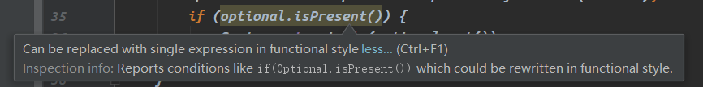

源码翻译
package java.util;
import java.util.NoSuchElementException;
import java.util.Objects;
import java.util.function.Consumer;
import java.util.function.Function;
import java.util.function.Predicate;
import java.util.function.Supplier;
/**
* 一个可能包含也可能不包含一个非空值的容器对象。
* 如果存在值，{@code isPresent()}将返回{@code true}，{@code get()}将返回该值。
*
*
* <p>提供了根据值是否存在执行不同操作的附加方法，比如{@link #orElse(Object) orElse()}
* （值不存在时返回默认值）和{@link #ifPresent(java.util.function.Consumer) ifPresent()}
* （值存在时执行代码块）。
*
* <p>这是一个<a href="../lang/doc-files/ValueBased.html">基于值</a>的类；对
* {@code Optional}实例使用同一性敏感（identity-sensitive）的操作（包括引用相
* 等性比较{@code ==}、散列码比较和同步）可能会引发非预期效果，应当避免。
*
* @author jdk
* @since 1.8
*/
public final class Optional<T> {
/**
* {@code empty()}常量实例
*/
private static final Optional<?> EMPTY = new Optional<>();
/**
* 若非null则为包含的值，为null则表示不包含值
*/
private final T value;
/**
* 构造一个空（empty）实例。
*
* @implNote 通常虚拟机中只存在一个空实例{@link Optional#EMPTY}
*/
private Optional() {
this.value = null;
}
/**
* 返回一个空的{@code Optional}实例，该实例中不含值。
*
* @param <T> 值的类型
* @return 一个空的{@code Optional}实例
* @apiNote 若要判断一个{@code Optional}实例是否为空，避免使用{@code ==}与
* {@code Option.empty()}所返回的实例作比较，因为空{@code Optional}不一定是
* 单例的，应使用{@link #isPresent()}进行判空。
*/
public static <T> Optional<T> empty() {
// 强转
@SuppressWarnings("unchecked")
Optional<T> t = (Optional<T>) EMPTY;
return t;
}
/**
* 用给定值构造一个实例。
*
* @param value 将被包含的非null值
* @throws NullPointerException 若传入的value为null则抛出
*/
private Optional(T value) {
this.value = Objects.requireNonNull(value);
}
/**
* 返回一个包含给定非null值的{@code Optional}实例。
*
* @param <T> 值的类型
* @param value 将被包含的非null值
* @return 包含给定非null值的{@code Optional}实例
* @throws NullPointerException 若传入的value为null则抛出
*/
public static <T> Optional<T> of(T value) {
return new Optional<>(value);
}
/**
* 若给定的值不为null则返回一个包含给定值的{@code Optional}实例，否则
* 返回一个空的{@code Optional}实例。
*
* @param <T> 值的类型
* @param value 可能为null的值
* @return 包含给定非null值的{@code Optional}实例或空的{@code Optional}实例
*/
public static <T> Optional<T> ofNullable(T value) {
return value == null ? empty() : of(value);
}
/**
* 若包含非null值则返回该值，否则抛出{@code NoSuchElementException}异常。
*
* @return 对象所持有的非null值
* @throws NoSuchElementException 若不存在值则抛出
* @see Optional#isPresent()
*/
public T get() {
if (value == null) {
throw new NoSuchElementException("No value present");
}
return value;
}
/**
* 若存在值则返回{@code true}，否则返回{@code false}。
*
* @return 若存在值则返回{@code true}，否则返回{@code false}
*/
public boolean isPresent() {
return value != null;
}
/**
* 若值存在则对其执行指定操作。
*
* @param consumer 待执行操作
* @throws NullPointerException 若值存在但传入的{@code consumer}为null则抛出
*/
public void ifPresent(Consumer<? super T> consumer) {
if (value != null) {
consumer.accept(value);
}
}
/**
* 若值存在且满足给定谓词则返回一个包含该值的{@code Optional}实例，否则返回
* 一个空的{@code Optional}实例。
*
* @param predicate 待判断谓词
* @return 若值存在且满足给定谓词则返回包含该值的{@code Optional}实例，否则返回空的{@code Optional}实例
* @throws NullPointerException 若给定谓词为null则抛出
*/
public Optional<T> filter(Predicate<? super T> predicate) {
Objects.requireNonNull(predicate);
if (!isPresent()) {
return this;
} else {
return predicate.test(value) ? this : empty();
}
}
/**
* 若值存在，对其执行给定的映射函数，若返回结果不为null，返回包含该结果的
* {@code Optional}实例。其它情况下返回空的{@code Optional}实例。
*
* @param <U> 映射函数结果类型
* @param mapper 将对可能存在的值执行的映射函数
* @return 若值存在，对其执行给定的映射函数，若返回结果不为null，返回包含
* 该结果的{@code Optional}实例。其它情况下返回空的{@code Optional}实例
* @throws NullPointerException 若映射函数为null则抛出
* @apiNote 该方法支持对值进行后处理（post-processing），而无需显式地检查
* 返回状态。例如，下面的代码遍历一个文件名流，选择一个尚未处理的文件，将
* 其打开并返回一个{@code Optional<FileInputStream>}：
*
* <pre>{@code
* Optional<FileInputStream> fis =
* names.stream().filter(name -> !isProcessedYet(name))
* .findFirst()
* .map(name -> new FileInputStream(name));
* }</pre>
* <p>在这段代码中，{@code findFirst}返回一个{@code Optional<String>}实例，
* 接着{@code map}为可能存在的预期文件返回一个{@code Optional<FileInputStream>}。
*/
public <U> Optional<U> map(Function<? super T, ? extends U> mapper) {
Objects.requireNonNull(mapper);
if (!isPresent()) {
return empty();
} else {
return Optional.ofNullable(mapper.apply(value));
}
}
/**
* 若值存在，对其执行给定的映射到{@code Optional}的函数（即该函数返回
* 结果为Optional），返回该结果，否则返回空的{@code Optional}实例。
* 该方法与{@link #map(Function)}相似，但给定的映射器本身就已返回一个
* {@code Optional}实例，在函数执行后不会多包装一层{@code Optional}。
*
* @param <U> 映射结果Optional所包含的值类型
* @param mapper 将对可能存在的值执行的映射函数
* @return t若值存在，对其执行给定的映射到{@code Optional}的函数，返回
* 该结果，否则返回空的{@code Optional}实例
* @throws NullPointerException 若给定的映射函数为null或其执行结果为null则抛出
*/
public <U> Optional<U> flatMap(Function<? super T, Optional<U>> mapper) {
Objects.requireNonNull(mapper);
if (!isPresent()) {
return empty();
} else {
return Objects.requireNonNull(mapper.apply(value));
}
}
/**
* 若值存在则返回它，否则返回指定的另一个值{@code other}。
*
* @param other 在Optional不包含值时要返回的值
* @return 若值存在则返回它，否则返回指定的另一个值{@code other}
*/
public T orElse(T other) {
return value != null ? value : other;
}
/**
* 若值存在则返回它，否则执行{@code other}并返回其结果。
*
* @param other 在Optional不包含值时将被执行的{@code Supplier}
* @return 若值存在则返回它，否则执行{@code other}并返回其结果
* @throws NullPointerException 若Optional不包含值且给定Supplier为null时抛出
*/
public T orElseGet(Supplier<? extends T> other) {
return value != null ? value : other.get();
}
/**
* 若值存在则返回它，否则抛出由给定supplier创建的异常。
*
* @param <X> 待抛出异常类型
* @param exceptionSupplier 用于创建异常的supplier
* @return 包含的值
* @throws X 若不包含值则抛出
* @throws NullPointerException 若不包含值且{@code exceptionSupplier}为null则抛出
* @apiNote 可以用参数列表为空的方法引用作为参数，例如{@code IllegalStateException::new}
*/
public <X extends Throwable> T orElseThrow(Supplier<? extends X> exceptionSupplier) throws X {
if (value != null) {
return value;
} else {
throw exceptionSupplier.get();
}
}
/**
* 判断其它对象是否等于当前Optional对象。
* 当满足下列条件时视作相等：
* <ul>
* <li>指定对象也是一个{@code Optional}
* <li>指定对象和当前对象都为空（empty）或两者所包含的值被{@code equals()}判定为相等
* </ul>
*
* @param obj 待测试对象
* @return 若待测试对象与当前对象相等则返回{code true}，否则返回{code false}
*/
@Override
public boolean equals(Object obj) {
// 判断是否为同一个引用
if (this == obj) {
return true;
}
// 判断待测试对象的类型是否为Optional
if (!(obj instanceof Optional)) {
return false;
}
// 强转后用所包含值的equals方法进行比较
Optional<?> other = (Optional<?>) obj;
return Objects.equals(value, other.value);
}
/**
* 若存在值则返回其散列码，否则返回0。
*
* @return 若存在值则返回其散列码，否则返回0
*/
@Override
public int hashCode() {
return Objects.hashCode(value);
}
/**
* 返回一个代表当前Optional对象的非空（non-empty）字符串，用于调试。
* 确切的表现格式未作规定，可能因实现和版本而异。
*
* @return 代表当前实例的字符串
* @implSpec 若值存在，则结果必须包含其字符串形式。空的和包含值的
* Optional必须明确可辨。
*/
@Override
public String toString() {
return value != null
? String.format("Optional[%s]", value)
: "Optional.empty";
}
}详解
基本介绍
Optional 类是 JDK8 中用于优雅地处理 null 问题的类，要用好这个类需要使用函数式编程的写法。
Optional 没有实现 Serializable 接口，一般只用作方法返回值，而不会将它作为字段和方法参数。
我们可以把 Optional 看作一个容器，它有一个字段 private final T value，如果 value 不为 null，则它就是 Optional 所持有的值，否则表示这个 Optional 实例不包含值。（下文中“包含值”、“存在值”、“持有值”等表述均表示value字段不为 null）
Optional 的构造方法都是私有的，创建 Optional 实例需要使用工厂方法 empty()、of(T value)、ofNullable(T value)。其中 empty() 方法会返回常量 EMPTY，但文档指出，返回的空 Optional 实例不一定是单例的，不应该借助 == Optional.empty() 判断一个 Optional 对象是否含有值。of(T value) 方法要求传入的 value 不能为 null，而 ofNullable(T value) 无此限制。
isPresent() 方法用于判断 Optional 中是否包含值。在值存在时，可以用 get() 方法来获取这个值，值不存在时这个方法会抛出 NoSuchElementException 异常。
但是，直接使用 isPresent() 和 get() 这两个方法，与直接使用 if(null != ...) 并没有多大的不同：
public class Main {
static class Student {
private String name;
public Student() {
}
public Student(String name) {
this.name = name;
}
public String getName() {
return name;
}
@Override
public String toString() {
return "Student{" +
"name='" + name + '\'' +
'}';
}
public static Student createBlankNameStudent() {
return new Student("");
}
}
public static void main(String[] args) {
Student student = new Student();
Optional<Student> optional = Optional.ofNullable(student);
// 直接使用isPresent()还是需要繁琐冗长的if语句
if (optional.isPresent()) {
System.out.println(optional.get());
}
}
}像上面这样写，IDEA 会提示可以用函数式风格替代：

替代后代码如下：
public static void main(String[] args) {
Student student = new Student();
Optional<Student> optional = Optional.ofNullable(student);
// 函数式风格
optional.ifPresent(System.out::println);
}ifPresent(Consumer<? super T> consumer) 方法允许我们以函数式编程的方式传入 Optional 含有值时对这个值的操作，是最常用的方法之一。
orElse、orElseGet、orElseThrow
orElse(T other) 方法在 Optional 包含值时会返回所持有的值，在不包含值时会返回传入的 other。
比如：
public static void main(String[] args) {
Student student = null;
Optional<Student> optional = Optional.ofNullable(student);
System.out.println(optional.orElse(new Student("是null")));
}运行结果为：
Student{name='是null'}
orElseGet(Supplier<? extends T> other) 方法则需要传入 Supplier，在值存在时返回 Optional 所持有的值，在值不存在时则用传入的 Supplier 创建新对象并返回。与 orElse 方法相比，这个方法能更好地支持函数式编程，并且 orElse 方法需要提前创建 other 对象，而这个方法是在 Optional 未存储有值时才创建新对象。
使用示例：
public static void main(String[] args) {
Student student = null;
Optional<Student> optional = Optional.ofNullable(student);
// 使用Lambda表达式
System.out.println(optional.orElseGet(() -> new Student("使用orElseGet")));
// 使用方法引用，直接传入工厂方法，也可以传入构造方法引用
System.out.println(optional.orElseGet(Student::createBlankNameStudent));
}运行结果：
Student{name='使用orElseGet'}
Student{name=''}
orElseThrow(Supplier<? extends X> exceptionSupplier) 方法则是在 Optional 持有值时返回该值，在未持有值时使用传入的 Supplier 抛出异常。和 orElseGet 一样的是，只有当值不存在时异常对象才会被创建。
map方法
在 Java8 之前，如果需要从多层对象嵌套中取出一个值，我们需要对每一层取值进行判空操作。比如：
public static void main(String[] args) {
Student student = new Student("阿普鲁派");
if (null != student && null != student.getName()) {
System.out.println(student.getName().length());
}
}Optional 的 map(Function<? super T, ? extends U> mapper) 方法可以帮我们摆脱繁琐的 if(null != ...) 风暴：
public static void main(String[] args) {
Optional<Student> optional = Optional.of(new Student("阿普鲁派"));
optional.map(Student::getName).map(String::length).ifPresent(System.out::println);
}在上面这段代码中，我们使用 optional.map(...).map(...).ifPresent(...) 替代了大段的嵌套 if 或是复杂的逻辑判断，不仅代码简洁得多，对熟悉 Java8 的开发人员来说可读性也高得多。
如果不使用 Optional，中间某一层返回 null 时就会导致 NPE。而在连续的 map(...) 链条中，任何一环的 Optional 对象不持有值，都会使得这一环的 map 返回 Optional.EMPTY，然后级联地使得最后一次的 map 也将获得 Optional.EMPTY，于是，ifPresent(...) 操作中的 Consumer 将不会被执行。Optional.EMPTY 是一个非 null 的对象，我们对它的操作不会引发 NPE。
Optional 类中还有 filter 和 flatMap 两个未介绍的方法，只要熟悉 Java 的函数式编程，掌握这两个方法也是很容易的。
总结
用好 Optional 的 map 方法和 ifPresent 方法，我们就可以摆脱大段用于空指针判断的 if 语句，而 orElseGet 等方法则给我们带来了更多的便利，让我们代码更加简洁和优雅。